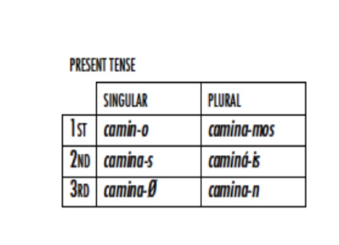

<img class="tall" src="ling_memes/doro.jpg"> --- # Inflectional Morphology of Nouns ### Dr. Will Styler - LIGN 120 --- ### Today's Plan - Inflection Review - Paradigms for Analysis - What does inflection usually do to nouns? --- # Inflectional Morphology --- ## Inflectional Morphology A morphological process which changes the meaning of a lexeme *in a given linguistic or grammatical context* --- ### Inflection vs. Derivation - **Derivation** creates 'new words' - **Inflection** produces new word forms relevant to a given linguistic context --- ### Inflection and Derivation combine to build the paradigms of language - **Derivation** creates new words to put into inflectional paradigms - **Inflection** creates paradigms from a given word --- <img class="wide" src="morphology/paradigms_inflection.jpg"> --- ### There are many kinds of inflectional paradigms --- ### Verb Paradigms in Spanish <img class="wide" src="morphology/spanish_irparadigm_top.jpg"> --- ### Verb Paradigms in English <img class="wide" src="morphology/english_verbparadigm.jpg"> --- ### Case Paradigm in Latin <img class="wide" src="morphology/latin_island_paradigm.jpg"> --- ### English pronoun paradigm <center> <style type="text/css"> .tg {border-collapse:collapse;border-spacing:0;} .tg td{font-family:Arial, sans-serif;padding:10px 5px;border-style:solid;border-width:1px;overflow:hidden;word-break:normal;} .tg th{font-family:Arial, sans-serif;font-weight:normal;padding:10px 5px;border-style:solid;border-width:1px;overflow:hidden;word-break:normal;} .tg .tg-e3zv{font-weight:bold} </style> <table class="tg"> <tr> <th class="tg-031e"></th> <th class="tg-e3zv">Singular</th> <th class="tg-e3zv">Plural</th> </tr> <tr> <td class="tg-e3zv">1st</td> <td class="tg-031e">I</td> <td class="tg-031e">we</td> </tr> <tr> <td class="tg-e3zv">2nd</td> <td class="tg-031e">you</td> <td class="tg-031e">y'all</td> </tr> <tr> <td class="tg-e3zv">3rd</td> <td class="tg-031e">he/she</td> <td class="tg-031e">they</td> </tr> </table> </center> --- ### Spanish pronoun paradigm <center> <style type="text/css"> .tg {border-collapse:collapse;border-spacing:0;} .tg td{font-family:Arial, sans-serif;padding:10px 5px;border-style:solid;border-width:1px;overflow:hidden;word-break:normal;} .tg th{font-family:Arial, sans-serif;font-weight:normal;padding:10px 5px;border-style:solid;border-width:1px;overflow:hidden;word-break:normal;} .tg .tg-e3zv{font-weight:bold} </style> <table class="tg"> <tr> <th class="tg-031e"></th> <th class="tg-e3zv">Singular</th> <th class="tg-e3zv">Plural</th> </tr> <tr> <td class="tg-e3zv">1st</td> <td class="tg-031e">Yo</td> <td class="tg-031e">Nosotros</td> </tr> <tr> <td class="tg-e3zv">2nd</td> <td class="tg-031e">Tu/Usted</td> <td class="tg-031e">Vosotros/Ustedes</td> </tr> <tr> <td class="tg-e3zv">3rd</td> <td class="tg-031e">El/Ella</td> <td class="tg-031e">Ellos/Ellas</td> </tr> </table> </center> --- ### Paradigms are a useful analytical tool! - They relate forms and meanings! --- ### How to create a paradigm as an analytical tool - Determine the dimensions of meaning - 'Person', 'Tense', 'Case', 'Number', etc. - Create a 'grid' which has slots for each possible form - Fill in the forms! --- ### Some data... - camino 'I walk' - caminabas 'You were walking' - caminamos 'We walk' - camináis 'Y'all walk' - caminaban 'They were walking' - caminábamos 'We were walking' - caminaba 'I was walking' - caminan 'They walk' - **What dimensions are present here?** --- ### Our dimensions - Present vs. Past - 1st vs. 2nd vs. 3rd person - Singular vs. Plural --- ### We can create paradigms and fill the slots!  --- <img class="wide" src="morphology/spanish_3d_paradigm_imp.jpg"> --- <img class="wide" src="morphology/spanish_3d_paradigm.jpg"> --- ### Remember that different words can use different paradigms! - 'Verb classes' or 'Inflectional classes' are common - Sometimes, part of the description is discussing the paradigms, and then labeling words by inflection class --- ### Verb Paradigms in Kiowa <center> <table> <tr> <th></th> <th>'go' class</th> <th>'read' class<br></th> <th>'talk' class</th> </tr> <tr> <td>1sg</td> <td>à-</td> <td>gyàt-</td> <td>yã-<br></td> </tr> <tr> <td>2sg</td> <td>èm-</td> <td>bátk-</td> <td>gyát-</td> </tr> <tr> <td>3sg</td> <td>ø</td> <td>gyá-</td> <td>án-</td> </tr> </table> </center> --- ### Finding paradigms is *really* useful - If there are paradigms in a dataset, start hunting down elements! - It's a great way to organize your thoughts - ... and a great way to present them! - **Any dimension** can be put into a paradigm - Not just person, number, etc. --- ### A brief aside: Exclusive vs. Inclusive 1PL - Some languages have an additional contrast in the person paradigm - 'Inclusive we': "Myself and you (and perhaps others)" - 1PL.INCL - 'Exclusive we': "Myself and others, *but not you*." - 1PL.EXCL --- ### Your paradigms need to have dimensions of meaning - How do you know what dimensions to look for? --- # What does inflectional morphology usually do? --- ### Inflectional morphology usually has grammatical meaning - Inflectional markings give us information which helps interpret the sentences - Inflectional meanings vary by sentential context - 'He saw her last week' vs. 'She's the one he saw' - Inflectional meanings are often relevant to syntax - The same sorts of inflectional meanings show up over and over again! --- ## We'll work on Nouns (and associated words) today - ... and get verby next week --- ### Common Inflectional Meanings on Nouns (and the things that modify them) - Number - Gender and Noun Class - Case Marking - Other nominal markings --- ## Number Marking --- ### Number Marking - Often Singular (unmarked) vs. Plural (marked) - Sometimes collective (unmarked) vs. singulative (marked) - ŋɛɛti 'lice' vs. ŋɛɛti-n 'louse' - Sometimes you'll see 'dual' forms, or other number-based forms --- ## Gender and Noun Class --- ### Grammatical Gender Grouping words into multiple genres, and using different forms and "agreements" for each * We call it "Grammatical Gender" when masculine/feminine are used, "Noun class" when there are other categories * These terms are often used interchangeably --- <lang>French</lang><br><ldata>IE:Italic - All over</ldata> * Un homme parfait - 'a perfect man' (masculine) * Une femme parfaite - 'a perfect woman' (feminine) * Un appartement parfait - 'a perfect apartment' (masculine) * Une tondeuse parfaite - 'a perfect lawnmower' (feminine) --- ### Agreement When words or forms change to "match" a characteristic of another part of the sentence --- <lang>Portuguese</lang><br><ldata>IE:Italic - Brazil, Portugal</ldata> * Um gato preto - 'a black cat' (masculine) * Uma gata preta - 'a black cat' (feminine) * Um garfo prateado - 'a silver fork' (masculine) * Uma colher prateada - 'a silver spoon' (feminine) --- <lang>Russian</lang><br><ldata>IE:Slavic - Russia</ldata> * красивый дом (Krasiviy dom) - 'Pretty house' (masculine) * красивая девушка (Krasivaya devushka) - 'Pretty girl' (feminine) * красивое море (Krasivoye Morye) - 'Pretty sea' (neuter) --- ### Grammatical Gender Facts * Often based on the form of the word, rather than the meaning * The Russian word for "moon" is feminine, but the Polish word is masculine. * Usually "masculine" and "feminine", but there's also "neuter" * Other words (adjectives, verbs, articles) change to "agree" with the gender * It's not always about Gender at all... --- ### Animate/Inanimate Classes * Marks gender based on animacy or "alive-ness" * Used in Basque, English (he/she/it), Totonac, Navajo, Tamil, PIE (??), and more! * In Navajo: Human > Infant/Big Animal > Medium-sized Animal > Small Animal > Natural Force > Abstraction --- ### Larger Noun Class Systems - More than just a few categories - Often semantically linked - Sometimes phonologically linked - Sometimes completely arbitrary --- <lang>Zande</lang><br><ldata>Niger-Congo:Zande - Congo</ldata> 1. Human (Male) - "Man" 2. Human (Female) - "Wife" 3. Animate - "Beast" 4. Other - "House" --- <lang>Swahili</lang><br><ldata>Niger-Congo:Bantu - East Africa</ldata> 1. Singular Persons 2. Plural Persons 3. Singular Plants 4. Plural Plants 5. Singular Fruits 6. Plural Fruits 7. Singular things 8. Plural things 9. Singular Animals 10. Plural Animals 11. Singular ??? 15. Verbal nouns 16. Things close to other things (and so on) --- <lang>Dyirbal</lang><br><ldata>Pama-Nyungan - Australia</ldata> 1. animate objects, men 2. women, water, fire, violence 3. edible fruit and vegetables 4. miscellaneous (includes things not classifiable in the first three) --- <img class="big" src="img/womenfiredangerousthings.jpg"> --- ### Navajo Noun Class Markers * -ʼą́ – Solid Roundish Objects * -yį́ – Load, Pack, Burden * -ł-jool – Non-Compact Matter * -lá – Slender Flexible Object * -tą́ – Slender Stiff Object * -ł-tsooz – Flat Flexible Object * -tłééʼ – Mushy Matter * -nil – Plural Objects 1 * -jaaʼ – Plural Objects 2 * -ką́ – Open Container * -ł-tį́ – Animate Object * **Often, you *don't need to mention the noun again!*** --- ### Grammatical Gender is common! * ~45% of languages have gender or noun classes ([according to WALS](http://wals.info/chapter/31)) * ~75% of gender-using languages use sex-based Gender * (Remember, it's still arbitrary) --- ### There are other kinds of inflection done to nouns - Diminuitive and Augmentative affixes - Gato -> Gatito in Spanish - Perro -> Perrazo - Determiners and possessives can attach as affixes - Proper noun markers (e.g. in Basque) - **... but number and gender are really common!** --- ### Wrapping Up - Paradigms are everywhere, and they're a useful tool - Inflectional morphology is often used to mark sentential context - Nouns often are inflected for number and gender --- ## For Next Time - Data, then one more lecture on inflection, just in case. --- <huge>Thank you!</huge>